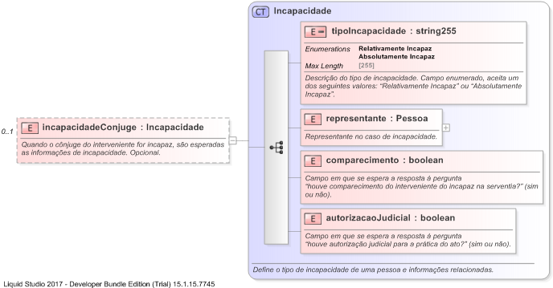

| Definition Type: | Element |
| Name: | incapacidadeConjuge |
| Namespace: | http://www.tjsc.jus.br/selo/XMLSchema |
| Type: | nsS:Incapacidade |
| Containing Schema: | xsComum.xsd |
| MinOccurs | 0 |
| MaxOccurs | (1) |
| Abstract | |
| Documentation: | Quando o cônjuge do interveniente for incapaz, são esperadas as informações de incapacidade. Opcional. |
|  |
|
|
|||||||||||||||||||||
|
|